LA SECONDA GENERAZIONE
"Alcune persone diventano poliziotti perché vogliono far diventare il mondo un posto migliore.
Alcune diventano vandali perché vogliono far diventare il mondo
un posto migliore da vedere".
(Banksy)
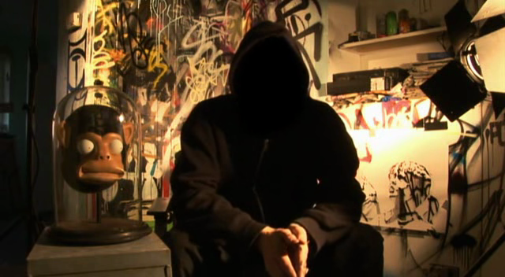
Banksy
Banksy(Bristol 1974) è un artista, writer e regista inglese, considerato uno dei maggiori esponenti della street art.
I lavori di commento politico e sociale di Banksy sono stati presentati su strade, muri e ponti di città in tutto il mondo.Il lavoro di Banksy è nato dalla scena underground di Bristol , che ha coinvolto collaborazioni tra artisti e musicisti. Banksy afferma di essere stato ispirato da 3D, un artista di graffiti che in seguito divenne membro fondatore del gruppo musicale inglese Massive Attack.
La reale identità di Banksy non è nota, e questo gli ha permesso di epurare il soggettivismo
dell´artista dal contenuto delle sue opere, oltre che di compiere azioni di guerrilla art.
Nel 2005 entra al Metropolitan Museum di New York, dove ha appesso,in pieno giorno, il ritratto di una dama che indossa una maschera a gas, compiendo così una delle azioni di guerrilia art piú famose della sua cariera, insieme a quella del 2006 a Disneyland dove ha introdotto una scultura raffigurante un
 detenuto di Guantanamo.
detenuto di Guantanamo.
Ha anche documentato gli orrori dei conflitti bellici lavorando sul posto realizzando 9 graffiti sul lato palestinese del muro tra Israele e Cisgiordania nel 2005, compiendo un incursione artistica nel 2015 e realizzando a Betlemme il Walled-off Hotel, con vista sul muro che separa israeliani e palestinesi e decorato da sue opere.
è famoso anche per le opere realizzate nelle città occidentali dove ha riconvertito il tessuto metropolitano delle città occidentali in luogo di riflessione (i lavori realizzati nel 2008 sulle case distrutte di New Orleans dopo l´uragano Katrina, il progetto del 2013 Better out than in, che prevedeva la realizzazione di un´opera al giorno in varie zone di New York e che nello stesso anno gli è valso il Webby Awards e il parco divertimenti aperto dall'agosto al settembre 2015 in un'area abbandonata sulla spiaggia di Weston-super-Mare, nel sud-ovest dell'Inghilterra, parodia dark dei parchi a temi della Disney).
Banksy mostra la propria arte su superfici visibili pubblicamente come muri e pezzi di propulsione fisica autocostruiti. Banksy non vende fotografie o riproduzioni dei loro graffiti di strada, ma i banditori d'arte sono stati conosciuti per tentare di vendere la street art sul posto e lasciare il problema della sua rimozione nelle mani dell'offerente vincitore. Banksy ha creato un film documentario, Exit Through the Gift Shop , definito "il primo film catastrofico di arte di strada al mondo", che ha fatto il suo debutto al Sundance Film Festival del 2010.
Nel gennaio 2011, Banksy è stato candidato all'Oscar per il miglior documentario del film.Nel 2014, Banksy è stato premiato come Person
of the Year ai Webby Awards 2014.
indice
I lavori di commento politico e sociale di Banksy sono stati presentati su strade, muri e ponti di città in tutto il mondo.Il lavoro di Banksy è nato dalla scena underground di Bristol , che ha coinvolto collaborazioni tra artisti e musicisti. Banksy afferma di essere stato ispirato da 3D, un artista di graffiti che in seguito divenne membro fondatore del gruppo musicale inglese Massive Attack.
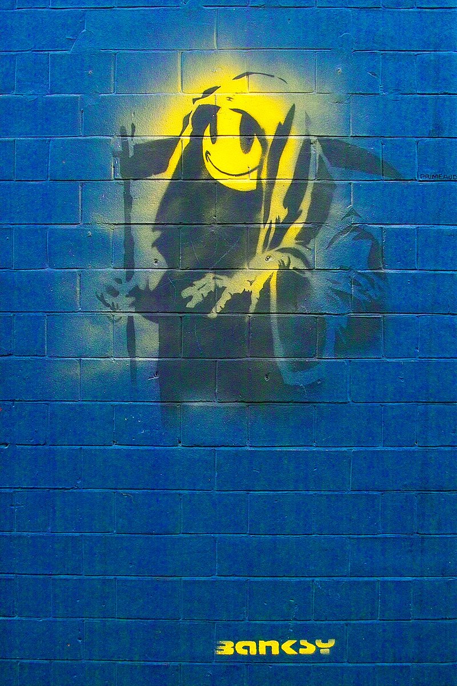
Abile manipolatore dei codici comunicativi della cultura di massa, tematiche centrali delle sue opere (realizzate all´inizio attraverso la tecnica dei
graffiti a mano, poi con quella dello stencil che gli consente una maggiore rapidità di esecuzione), sono costituite dalla condanna delle atrocità della
guerra, dell´inquinamento, del maltrattamento degli animali e del consumismo, e suoi soggetti ricorrentisono scimmie, topi, poliziotti, ironicamente assunti a soggetto-simbolo di tipologie umane ben distinguibili, ma anche membri della famiglia reale, gatti e bambini.La reale identità di Banksy non è nota, e questo gli ha permesso di epurare il soggettivismo
dell´artista dal contenuto delle sue opere, oltre che di compiere azioni di guerrilla art.
Nel 2005 entra al Metropolitan Museum di New York, dove ha appesso,in pieno giorno, il ritratto di una dama che indossa una maschera a gas, compiendo così una delle azioni di guerrilia art piú famose della sua cariera, insieme a quella del 2006 a Disneyland dove ha introdotto una scultura raffigurante un
Ha anche documentato gli orrori dei conflitti bellici lavorando sul posto realizzando 9 graffiti sul lato palestinese del muro tra Israele e Cisgiordania nel 2005, compiendo un incursione artistica nel 2015 e realizzando a Betlemme il Walled-off Hotel, con vista sul muro che separa israeliani e palestinesi e decorato da sue opere.
è famoso anche per le opere realizzate nelle città occidentali dove ha riconvertito il tessuto metropolitano delle città occidentali in luogo di riflessione (i lavori realizzati nel 2008 sulle case distrutte di New Orleans dopo l´uragano Katrina, il progetto del 2013 Better out than in, che prevedeva la realizzazione di un´opera al giorno in varie zone di New York e che nello stesso anno gli è valso il Webby Awards e il parco divertimenti aperto dall'agosto al settembre 2015 in un'area abbandonata sulla spiaggia di Weston-super-Mare, nel sud-ovest dell'Inghilterra, parodia dark dei parchi a temi della Disney).
Banksy mostra la propria arte su superfici visibili pubblicamente come muri e pezzi di propulsione fisica autocostruiti. Banksy non vende fotografie o riproduzioni dei loro graffiti di strada, ma i banditori d'arte sono stati conosciuti per tentare di vendere la street art sul posto e lasciare il problema della sua rimozione nelle mani dell'offerente vincitore. Banksy ha creato un film documentario, Exit Through the Gift Shop , definito "il primo film catastrofico di arte di strada al mondo", che ha fatto il suo debutto al Sundance Film Festival del 2010.
Nel gennaio 2011, Banksy è stato candidato all'Oscar per il miglior documentario del film.Nel 2014, Banksy è stato premiato come Person
of the Year ai Webby Awards 2014.
indice
Obey
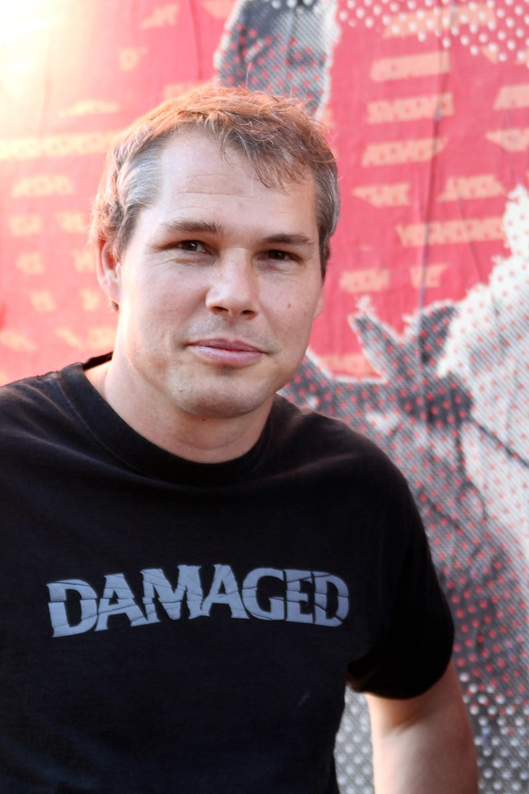
Obey(Charleston 1970) è un artista e illustratore statunitense conosciuto come uno dei piú esponenti dell'arte di strada. è noto principalmente per le sue campagne di diffusione abusiva di sticker e poster art (Obey the Giant has a posse e Obey) aventi per soggetto il ritratto del wrestler A.R. Roussimoff.
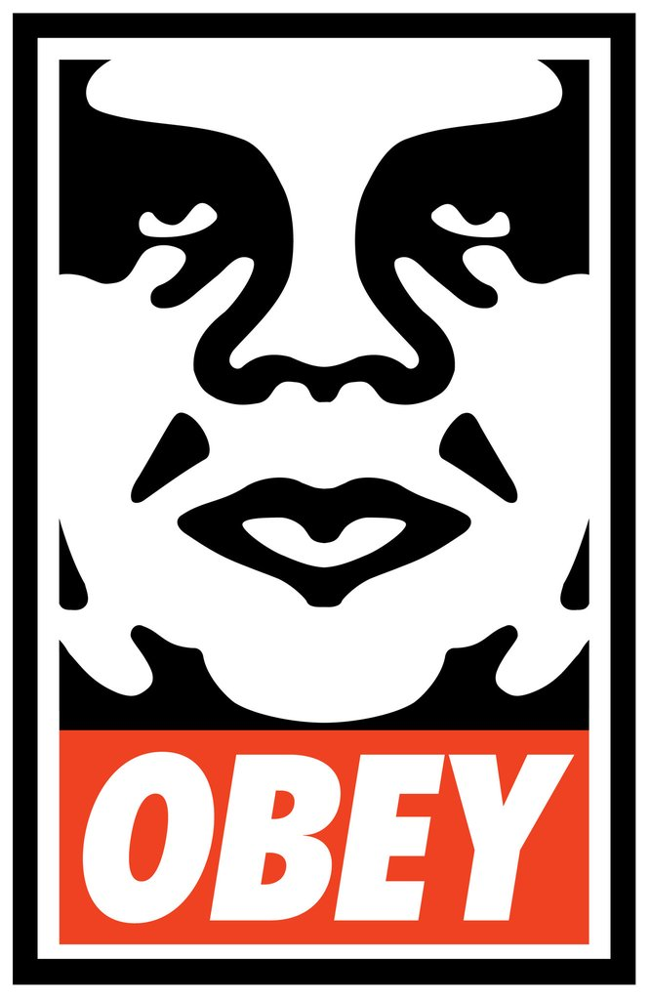
La massiccia affissione dell´immagine apparentemente nonsense del lottatore, associata a imperativi illogici, viene spiegata dall´autore come un esperimento di fenomenologia dove, in linea con le teorie del sociologo M.E. McLuhan, è il mezzo, ovvero il poster, il reale messaggio. La notorietà al grande pubblico arriva nel 2008 quando l´artista realizza e affigge nelle principali città americane un ritratto in quadricromia, accompagnato dagli slogan Hope e Change, dell´allora candidato alle presidenziali statunitensi B. Obama. Pur non avendo mai ufficializzato la collaborazione, all´indomani della vittoria l´ormai eletto presidente ha ringraziato personalmente Obey con una lettera per il supporto.
Da quel momento la ricerca artistica di Obey si è concentrata sulle icone della cultura pop, di cui l´artista realizza ritratti attingendo a un immaginario denso di influenze; dal costruttivismo al liberty, passando per la cultura punk. Tra le numerose mostre personali e collettive cui ha preso parte, meritano menzione Supply & demand: 20 year survey (2009, Warhol Museum, Pittsburgh - Institute of Contemporary Art Boston) e la collettiva Art in the streets (2011, MOCA - Los Angeles).Ha inoltre collaborato spesso con altri street artist come Banksy e Invader nella realizzazione di grandi murales e affissioni. è inoltre fra i protagonisti del documentario sulla street art Exit through the gift shop diretto da Banksy (2010).
Oltre che street artist, Obey è anche un imprenditore di successo; la sua linea di abbigliamento Obey Clothing e lo Studio Number One laboratorio di grafica e design e autore anche della riprogettazione della mascotte Mozilla dell'omonimo navigatore web (Mozilla Application Suite) e della Mozilla Foundation)
indice
Mr. Brainwash
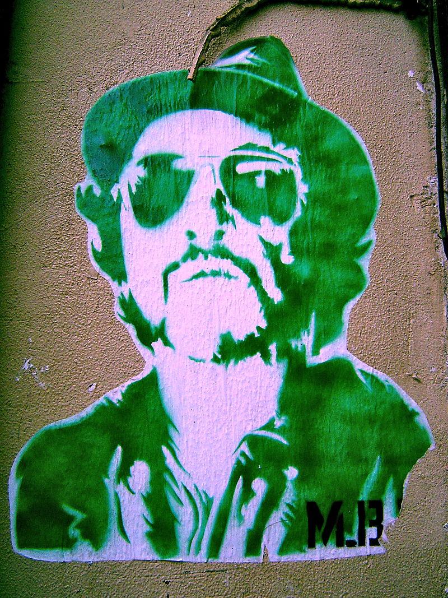
Mr. Brainwash(Garges-lès-Gonesse 1966) è un artista e writer francese.La prime tracce di Mr. Brainwash,o Thierry Guetta, si hanno nel giugno del 2008, quando inaugura la sua prima mostra-evento, inititolata "Life is Beautiful", a Los Angeles,n un ex studio televisivo di Hollywood. Lo spettacolo ha ottenuto la copertina di LA Weekly, una delle pubblicazioni piú diffuse di Los Angeles. La vita è bella che attrae migliaia di persone che si allineano per le strade. Con un robot di 20 piedi, una piramide composta da 20.000 libri e una ricreazione a grandezza naturale di "Nighthawks" di Edward Hopper, " Life Is Beautiful " è stata estesa per tre mesi, attirando un totale di 50.000 visitatori.
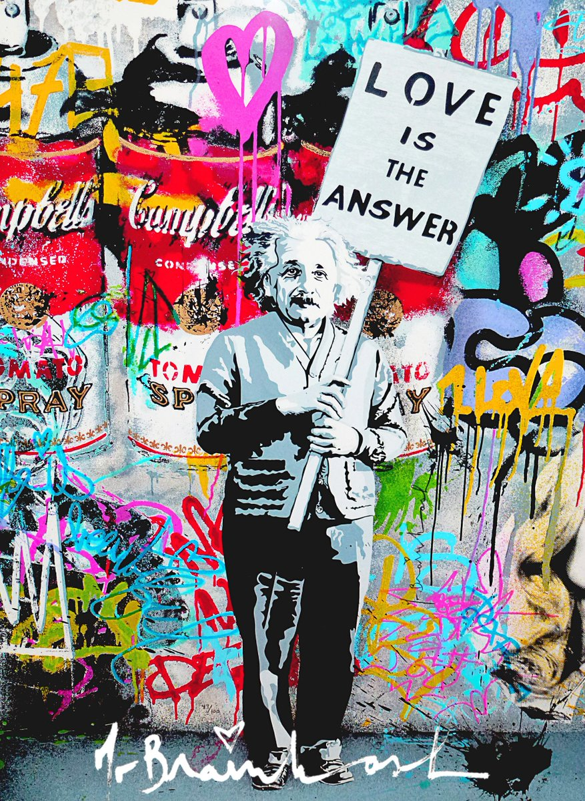
Nel 2009 ci fu La sua seconda esposizione, denominata ICONS, e si è tenuta il 14 febbraio 2010 a New York. Essa copriva una superficie di 1400 metri quadrati
all'interno di un magazzino abbandonato. Secondo Anthony Haden-Guest, blogger per The Daily Beast, un ritratto di Jim Morrison esposto all'interno della
mostra creato partendo da vinili rotti è stato venduto alla cifra di 100.000 dollari. Sempre per la mostra sono state create delle enormi lattine, con
grandezza variabile da cira un metro ad oltre tre metri. Nello stesso anno ha creato la copertina dell'album Celebration di Madonna.Nel giugno 2011 ha collaborato con i Red Hot Chili Peppers. A Los Angeles ha collocato in vari punti della città dei graffiti raffiguranti un robot ed il logo del gruppo con la data 30 agosto 2011. Inizialmente la band ha negato ogni collegamento con l'attività dell'artista. Successivamente, però, il 14 luglio 2011 il sito web di gossip TMZ.com ha annunciato che i graffiti facevano parte della promozione ufficiale del nuovo album della band di Anthony Kiedis, I'm with You, che è stato distribuito proprio il 30 agosto. Mr. Brainwash ha confermato di essere lui l'autore delle opere, affermando di avere molti altri progetti con la band.
Thierry Guetta ha utilizzato lo pseudonimo Mr. Brainwash nel film Exit Through the Gift Shop. Nel film, diretto da Banksy con l'aiuto di Obey, le sue interviste si susseguono a quelle di personaggi come Invader, Obey e Banksy stesso. Guetta è presentato come un cittadino francese che vive ora a Los Angeles, ex proprietario di un negozio di vestiti e videoamatore trasformatosi nel tempo in uno street artist, influenzato per l'appunto dalla street art che aveva conosciuto grazie a suo cugino (il francese Invader, altro famoso street artist) e documentato tramite i suoi filmati amatoriali nel corso degli anni.
L'opera di Guetta è fortemente influenzata dagli stili e dalle idee di vari personaggi incontrati durante le sue riprese, inclusi Banksy e Obey.
Come Banksy, Guetta usa immagini famose, alcune anche coperte da copyright, modificandole poi secondo il proprio gusto. A differenza di Banksy, che nel film viene mostrato mentre lavora alle sue opere, Guetta afferma che il suo lavoro consiste principalmente nello "scanning and photoshopping" (copiare e modificare), attività portate avanti dai suoi collaboratori. Guetta stesso ammette in Exit Through the Gift Shop che la maggior parte del processo di creazione artistica è demandata ai suoi collaboratori, a cui viene solo spiegata l'idea di fondo dell'opera.
indice
Invader
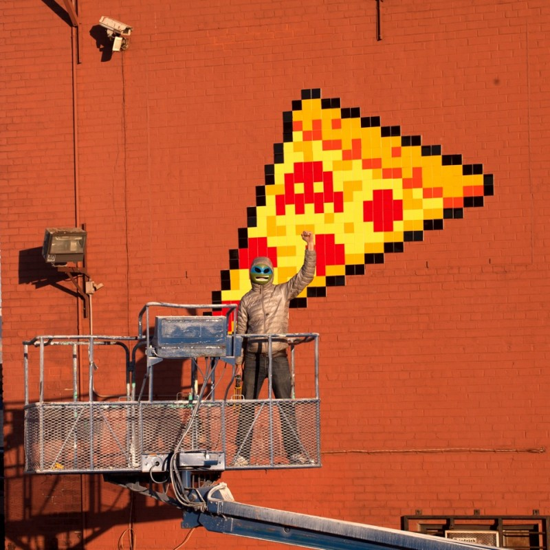
Invader(francia 1969) è un artista e writer francese.Invader si può definire,fino ad ora, uno dei writer piú originali che esista, infatti il suo lavoro è modellato sulla grezza pixellation dei videogiochi a 8-bit degli anni 70-80.Ha preso il suo nome dal gioco arcade del 1978 Space Invaders , e gran parte del suo lavoro è composto da piastrelle quadrate in ceramica ispirate ai personaggi dei videogiochi. Sebbene preferisca rimanere in incognito, le sue creazioni possono essere viste in molte posizioni altamente visibili in oltre 65 città in 33 paesi.Documenta ogni intervento in una città come "Invasione" e pubblica libri
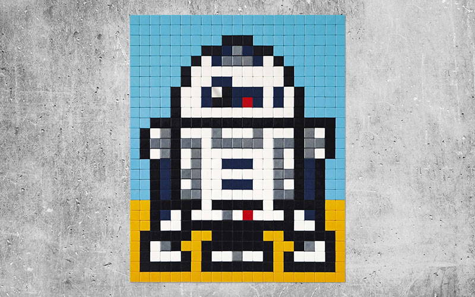
e mappe sulla posizione di ciascuno dei suoi mosaici di strada.A ogni mosaico installato attribuisce un punteggio che viene meticolosamente riportato
sulla mappa virtuale dell´invasione aliena presente nel suo sito.ha installato i suoi mosaici anche in zone impervie o inaccessibili come fondali marini e sulla
famosa insegna Hollywood che sovrasta la città di Los Angeles. Lo street artist è inoltre riuscito a collocare i suoi alieni musivi nello spazio per
ben due volte; la prima con il progetto Art4space dove attraverso un pallone a elio una sua creazione ha raggiunto la stratosferae la seconda nel
febbraio 2015 quando, in collaborazione con l´Agenzia Spaziale Europea, uno dei suoi alieni pixellati è stato inviato a bordo della ISS.A parte space invaders lo street artist è autore dei progetti Rubikcubism(realizzazione di personaggi,VIP e dipinti con i cubi di Rubik)e QR Code(l'artista, incollando ai muri dei QR Code, lascia dei messaggi e può essere letto tramite smartphone).
Invader è presente inoltre nel documentario Exit through the gift shop, diretto da Banksy.
indice
Dolk
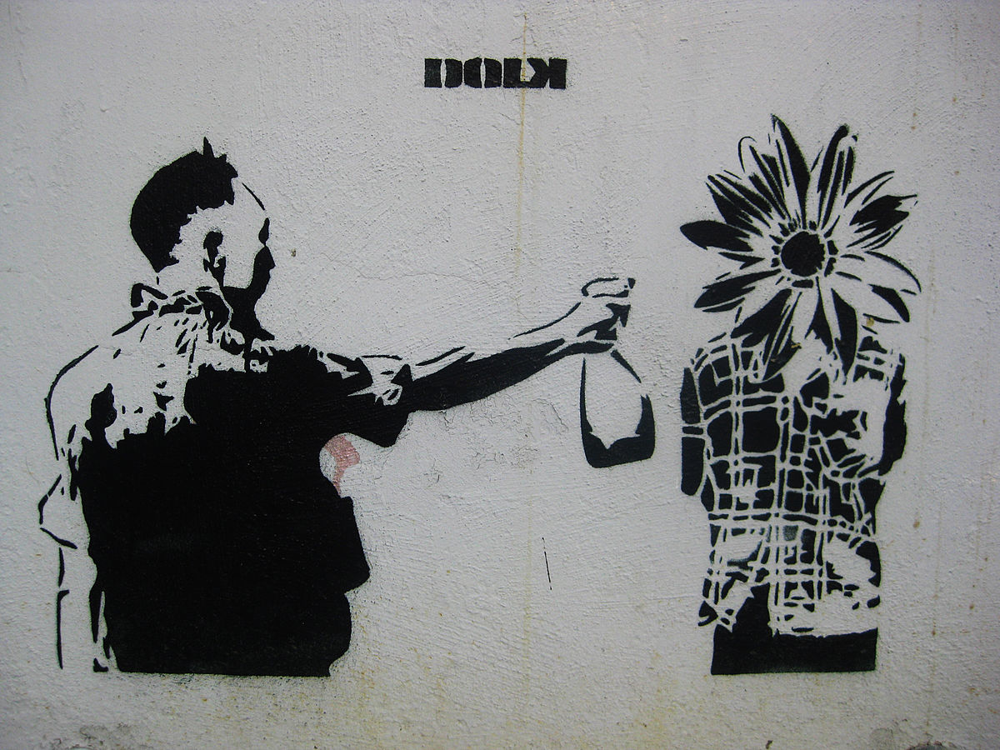
Dolk(Bergen 1979)è lo pseudonimo del piú famoso artista stencil norvegese.Le sue motivazioni sono spesso riferimenti
pop-culturali inseriti in un contesto umoristico o critico. Le opere di Dolk possono essere viste sui muri di città come Bergen, Berlino, Copenaghen, Barcellona, Oslo, Lisbona, Stoccolma, Londra, Praga e Melbourne.Dal 2006 Dolk è entrato in gallerie dove ha avuto diverse mostre.
ha iniziato a lavorare con stencil nel 2003,dopo aver fatto dei corsi di meccanica a Bergen e dopo aver studiato graphic design a Melbourne, e afferma di essere stato ispirato dall'artista di strada britannico Banksy per iniziare con l'arte dello stencil.Dolk ha iniziato con stencil art a Bergen nel
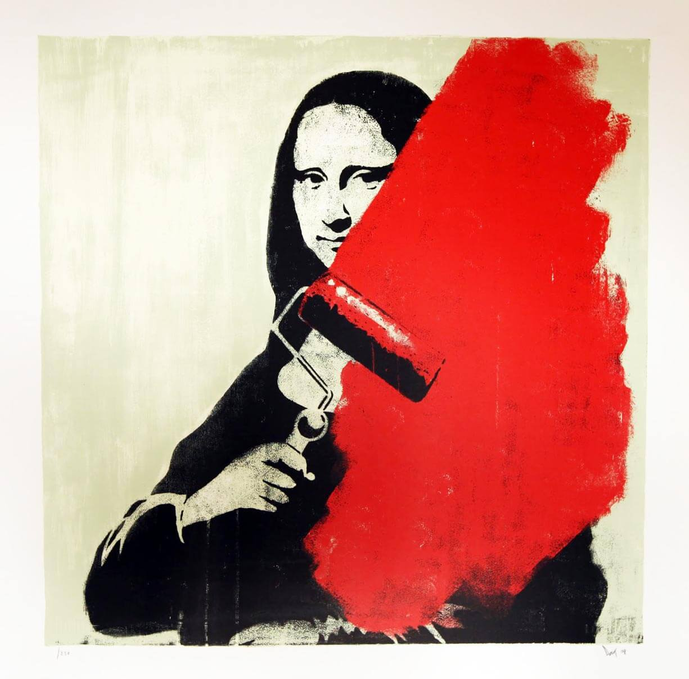
2003, dove molte delle sue opere sono ancora visibili sui muri della città. Ben presto iniziò a viaggiare per il mondo, e a Londra la gente ha confuso
le opere di Dolk per essere arte di Banksy.Dolk ha realizzato stencil art in molte città. Dopo un po 'Dolk ha voluto portare la sua arte in forme piú
legali e dal 2006 ha partecipato a mostre e festival d'arte in tutto il mondo. Nel 2008 Dolk e P∅bel hanno creato il progetto "Ghetto Spedalsk" nelle
Lofoten , nel nord della Norvegia. L'obiettivo era spostare la forma d'arte urbana nella terra di nessuno dipingendo 20 stencil su case abbandonate.Nel 2010 Dolk ha realizzato tre opere d'arte per l'apertura della prigione di Halden , l'arte copre le pareti nel cortile degli esercizi. La posta giornaliera chiamava la prigione "la prigione piú elegante del mondo, con oltre 1 milione di sterline in stile Banksy". Nel 2010 Dolk e P∅bel furono pagati dallo stato norvegese per mettere la loro arte nelle principali stazioni ferroviarie di Oslo e Trondheim .Nel 2011 Dolk ha tenuto la sua prima mostra separata a Oslo presso la galleria OSL Contemporary, dove ha venduto tutte le 9 tele per £ 12500 ciascuna.Nel 2011 Dolk è stato uno dei tanti artisti di strada che hanno dovuto decorare le pareti della Norwegian School of Economics come parte del progetto "............ CAPITALISMO?"Dolk vende i suoi lavori attraverso il sito web handmadeposters.com di Bergen, e nel 2011 250 copie della stampa "Mushroom Girl" sono state esaurite in 40 minuti.
Nel 2012 ha venduto le stampe "TOY" e "Winner" per oltre £ 110000 in meno di due minuti.Nel 2012 è stato istituito Dolkblog.com; il fansite non ufficiale copre notizie, opere d'arte e informazioni sull'artista.
indice
Takashi Murakami
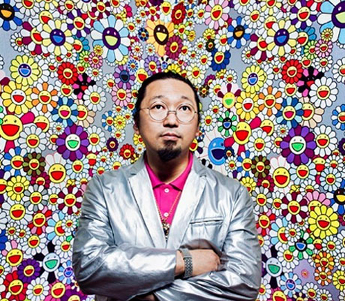
Takashi Murakami(Tokyo 1962) è un artista, scultore e pittore giapponese. Le sue opere, ispirate dai temi e dagli stili cari all'iconografia di
massa del suo paese, sono icone monumentali della cultura e della società del Giappone contemporaneo. Murakami è uno degli artisti piú noti nel panorama
internazionale, nel 2008 la rivista TIME lo ha definito il piú influente rappresentante della cultura giapponese contemporanea.
Nel 1986 ha intrapreso gli studi di pittura giapponese tradizionale presso il dipartimento di Belle Arti dell'Università delle Arti di Tokyo.
Il giovane Murakami era però piú attratto dai manga e dagli anime. Odiava la povertà e desiderava diventare disegnatore di manga. Era appassionato dalla cultura Otaku, che a suo avviso rappresentava il Giappone in cui stava vivendo. L'arte Nihon-ga che studiava invece non rispecchiava piú il nuovo Giappone.
Il 1989 è l'anno del suo esordio a Tokyo, dove si tenne la sua prima mostra personale.Nel 1994 dopo aver conseguito la laurea in pittura tradizionale Nihon-ga all'Università delle Arti di Tokyo, vinse una borsa di studio del MoMA PS1 e si trasferì a New York,dove rimase affascinato dal lavoro di Jeff Koons. In quel periodo, per soddisfare le necessità produttive del suo lavoro, raccolse intorno a sé un gruppo di collaboratori, e si interessò all'idea di Factory di Andy Warhol e alle filosofie produttive di aziende cinematografiche come Disney, LucasFilm e Studio Ghibli di Hayao Miyazaki.
Nel 1995 è invitato alla Biennale di Venezia e l'anno successivo fonda a New York la Hiropon Factory.Nel 1999 espone al Museum of Modern Art di San Francisco. Nel 2001 espone al Walker Art Center di Minneapolis, al Museum of Contemporary Art di Tokyo,e al Museum of Fine Arts di Boston.Nello stesso anno, al MOCA di Los Angeles, Murakami cura una mostra intitolata Superflat.La mostra farà il giro del mondo in diverse edizioni,promuovendo il lavoro di 19 artisti giapponesi.Superflat è il manifesto programmatico ed estetico di Murakami,e diventa un nuovo movimento d'arte giapponese.
Nel 2002 espone alla Fondazione Cartier di Parigi, e l'anno successivo è di nuovo alla Biennale di Venezia. Nel 2005 il Palais de Tokyo ospita una sua mostra a Parigi.Nel 2003 Murakami, in collaborazione con lo stilista Marc Jacobs, disegna per Louis Vuitton la borsa Cherry Blossom, trasfigurando il logo dell'azienda in stile manga. La borsa, venduta a 5000 dollari, riscuote un successo enorme. Nel mese di giugno dello stesso anno Francois Pinault, il proprietario di Christie's, acquista per circa 1,5 milioni di dollari la scultura in fibra di vetro Tongari Kun.Nel 2006 a Basilea, città dove ha sede la nota fiera d'arte Art Basel, si tiene la decima edizione di GEISAI, che promuove l'arte giapponese Superflat.Nel 2007 realizza la copertina dell'album Graduation di Kanye West.
Nel mese di aprile del 2009, in collaborazione con i creativi dell'agenzia SET, l'artista realizza per Louis Vuitton un Design QR, un tipo di codice QR formato dall'immagine di uno dei suoi personaggi e dal pattern colorato di Louis Vuitton.Il codice è leggibile dai telefonini e indirizza verso una pagina del sito web mobile giapponese di Louis Vuitton che promuove i prodotti frutto della collaborazione con l'artista. è la prima volta che Takashi Murakami si impegna in un progetto interattivo.Durante il mese di agosto dello stesso anno collabora con l'attrice Kirsten Dunst nella realizzazione del cortometraggio intitolato Akihabara Majokko Princess. Nel video, girato a Tokio e realizzato per la mostra Pop Life della Tate Gallery di Londra, l'attrice canta il successo Turning Japanese dei Vapors indossando abiti dai colori sgargianti.
Murakami è riuscito anche a rendere mobile e incerto il confine tra la cosiddetta high art, l'arte alta, destinata ai musei e ai ricchi collezionisti, e la low art, ovvero gli oggetti prodotti in serie e destinati al consumo di massa: la sua mostra © Murakami, un ventaglio della sua poliedrica attività creativa e commerciale, ospitava un negozio che vendeva i suoi oggetti di consumo.Oltre ad aver disegnato una serie di borse per Louis Vuitton,vendute tra 1000 e 5000 dollari, ha prodotto e commercializzato agende, caramelle, giocattoli, pupazzi, skateboard, t-shirt, cuscini e carte da parati.
indice
Nel 1986 ha intrapreso gli studi di pittura giapponese tradizionale presso il dipartimento di Belle Arti dell'Università delle Arti di Tokyo.
Il giovane Murakami era però piú attratto dai manga e dagli anime. Odiava la povertà e desiderava diventare disegnatore di manga. Era appassionato dalla cultura Otaku, che a suo avviso rappresentava il Giappone in cui stava vivendo. L'arte Nihon-ga che studiava invece non rispecchiava piú il nuovo Giappone.
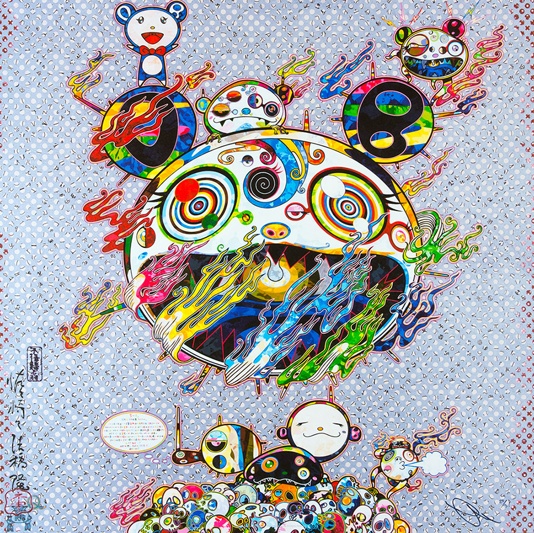
Il 1989 è l'anno del suo esordio a Tokyo, dove si tenne la sua prima mostra personale.Nel 1994 dopo aver conseguito la laurea in pittura tradizionale Nihon-ga all'Università delle Arti di Tokyo, vinse una borsa di studio del MoMA PS1 e si trasferì a New York,dove rimase affascinato dal lavoro di Jeff Koons. In quel periodo, per soddisfare le necessità produttive del suo lavoro, raccolse intorno a sé un gruppo di collaboratori, e si interessò all'idea di Factory di Andy Warhol e alle filosofie produttive di aziende cinematografiche come Disney, LucasFilm e Studio Ghibli di Hayao Miyazaki.
Nel 1995 è invitato alla Biennale di Venezia e l'anno successivo fonda a New York la Hiropon Factory.Nel 1999 espone al Museum of Modern Art di San Francisco. Nel 2001 espone al Walker Art Center di Minneapolis, al Museum of Contemporary Art di Tokyo,e al Museum of Fine Arts di Boston.Nello stesso anno, al MOCA di Los Angeles, Murakami cura una mostra intitolata Superflat.La mostra farà il giro del mondo in diverse edizioni,promuovendo il lavoro di 19 artisti giapponesi.Superflat è il manifesto programmatico ed estetico di Murakami,e diventa un nuovo movimento d'arte giapponese.
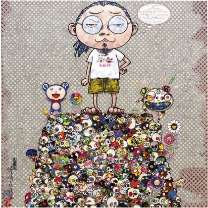
Nel 2002 espone alla Fondazione Cartier di Parigi, e l'anno successivo è di nuovo alla Biennale di Venezia. Nel 2005 il Palais de Tokyo ospita una sua mostra a Parigi.Nel 2003 Murakami, in collaborazione con lo stilista Marc Jacobs, disegna per Louis Vuitton la borsa Cherry Blossom, trasfigurando il logo dell'azienda in stile manga. La borsa, venduta a 5000 dollari, riscuote un successo enorme. Nel mese di giugno dello stesso anno Francois Pinault, il proprietario di Christie's, acquista per circa 1,5 milioni di dollari la scultura in fibra di vetro Tongari Kun.Nel 2006 a Basilea, città dove ha sede la nota fiera d'arte Art Basel, si tiene la decima edizione di GEISAI, che promuove l'arte giapponese Superflat.Nel 2007 realizza la copertina dell'album Graduation di Kanye West.
Nel mese di aprile del 2009, in collaborazione con i creativi dell'agenzia SET, l'artista realizza per Louis Vuitton un Design QR, un tipo di codice QR formato dall'immagine di uno dei suoi personaggi e dal pattern colorato di Louis Vuitton.Il codice è leggibile dai telefonini e indirizza verso una pagina del sito web mobile giapponese di Louis Vuitton che promuove i prodotti frutto della collaborazione con l'artista. è la prima volta che Takashi Murakami si impegna in un progetto interattivo.Durante il mese di agosto dello stesso anno collabora con l'attrice Kirsten Dunst nella realizzazione del cortometraggio intitolato Akihabara Majokko Princess. Nel video, girato a Tokio e realizzato per la mostra Pop Life della Tate Gallery di Londra, l'attrice canta il successo Turning Japanese dei Vapors indossando abiti dai colori sgargianti.
Murakami è riuscito anche a rendere mobile e incerto il confine tra la cosiddetta high art, l'arte alta, destinata ai musei e ai ricchi collezionisti, e la low art, ovvero gli oggetti prodotti in serie e destinati al consumo di massa: la sua mostra © Murakami, un ventaglio della sua poliedrica attività creativa e commerciale, ospitava un negozio che vendeva i suoi oggetti di consumo.Oltre ad aver disegnato una serie di borse per Louis Vuitton,vendute tra 1000 e 5000 dollari, ha prodotto e commercializzato agende, caramelle, giocattoli, pupazzi, skateboard, t-shirt, cuscini e carte da parati.
indice